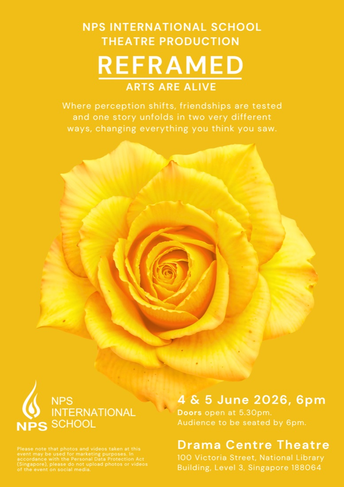

NPS International School · 雙週家長通訊 (Fortnightly Parent Newsletter)
9 年級家長重點整理 — 第 1026 期 (Issue 1026)
原刊：2026/05/29 · 整理：9 年級家長重點版 · noindex 內部分享
📑 目錄
6–10 月重要日期 校長公告（畢業典禮 · 國際文憑放榜） 🎭 中學部戲劇公演《重新框架 (Reframed)》 三個外部暑期營（深度解析） 史丹佛數學競賽 (Stanford Math Tournament) 校際運動聯賽第三季成績 畢業生反思（升學勵志案例） 行動清單
⚡ 本期最關鍵兩件事
✅ Ethan 年齡符合！ 生日 2010/10/27 → 暑期營舉辦的 7 月為 15 歲 ，符合三個營「15–18 歲」門檻。科技暑期營 (Summer Camp，7/7) 與醫學營 (Medicine Camp，7/13) 可直接以即時通訊 (WhatsApp) 向亞太管理教育中心 (Asia Pacific Centre of Management Education, APCME) 洽詢報名 （確認費用與名額）。探索計畫 (Discovery Program) 今年不適用 ：報名 5/22 已截止（今日 5/29），且官方版要求 10 年級 (Grade 10)（Ethan 剛完成 9 年級）。→ 列入明年候選。
📅 6–10 月重要日期
★ 標示者為 9 年級孩子直接相關。公共假期附簡短起源說明。
6 月
日期 事項
6/1 衛塞節 (Vesak Day) 〔公定假日〕佛教節日（華人 / 佛教徒），紀念佛陀誕生、成道與涅槃。 6/4 – 6/5 ★ 年度戲劇公演 (Annual School Production)《重新框架 (Reframed)》 — 中學部 詳情 ↓ 6/9 國際文憑課程親師會 (IBDP Parent-Teacher Conference, PTC)（2027 屆） 6/10 ★ 第一學期 (Term 1) 最後一天 · 中學便服日 (Mufti Day)，主題「夏日微風 (Summer Breeze)」便服日 = 學生當天可穿便服而非校服。 6/11 – 7/21 暑假 (Summer Holidays)
7 – 8 月
日期 事項
7/6 國際文憑成績放榜 (IB Results Day) （2026 屆）7/22 ★ 開學日 · 國際文憑課程 (IBDP) 新學年開始（2028 屆）7/24 種族和諧日 (Racial Harmony Day) 變裝日 (Dress-Up Day) — 小學部紀念 1964 年種族暴動，推廣新加坡多元種族和諧。 8/7 ★ 新加坡國慶日 (National Day) 慶祝 — 中學便服日 (Mufti Day)紀念 1965 年新加坡獨立建國。 8/8 ★ TEDx 講座 (TedX) — 中學部TED 官方授權的地方性主題演講活動。 8/10 國慶補假 (in-lieu)國慶日 8/9 適逢週日，週一補假。 8/13 新生家長說明會 (New Parents Orientation) — 中學部 8/14 ★ 中學部運動會 (Sports Day) 待確認 (subject to confirmation) 8/20 – 8/21 ★ 6–10 年級親師會 (Parent-Teacher Conference, PTC) —— 9 年級家長重要場次8/29 園遊會 (Carnival)
9 – 10 月
日期 事項
9/2 – 9/16 ★ 第一次總結性評量 (Summative Assessment 1, SA1) — 7–10 年級。👉 Ethan 大考期間 9/14 – 9/18 國際文憑一年級單元測驗 (IB1 Unit Test 1, UT1) 9/25 升 9 年級資訊之夜 (Into Grade 9 Information Evening)（給將升 9 年級者） 9/26 ★ 職涯資訊日 (Career Information Day) —— 9 年級建議參加10/1 升 11 年級資訊之夜 (Into Grade 11 Information Evening) 10/2 ★ 第二學期 (Term 2) 最後一天 · 中學便服日 (Mufti Day)，傳統服飾主題10/3 – 10/20 學校假期 (School Holidays) 10/21 開學日
📢 校長公告（校長 Mr. Andrew Wyeth）
第 15 屆畢業典禮 (15th Graduation Ceremony) （5/22，新加坡國立大學文化中心劇院 (NUS University Cultural Centre Theatre)）圓滿落幕，慶祝 2026 屆 (Class of 2026)。主賓 (Guest of Honour)：Mr Shawn Loh （惹蘭勿剎集選區 (Jalan Besar GRC) 國會議員 (Member of Parliament)）。
國際文憑成績放榜日 (IB Results Day)：7 月 6 日 。本屆 119 名畢業生 ，其中 21 名選擇在新加坡服國民役 (National Service)；39 名從幼兒部 (Early Years) 一路就讀至 12 年級 (Year 12)。
🎭 中學部戲劇公演《重新框架 (Reframed)》
📌 這是 6/4–6/5「年度戲劇公演 (Annual School Production)」的正式邀請 ，來自全校創意藝術副校長 (Associate Vice Principal – Whole School Creative Arts) Sakthivel Vijayarangam 的家長通知。
🎭 Ethan 是參演者 (cast) 之一 → 適用下方「參演者」須知：須出席 6/3（三）場佈與技術準備日 、演出日 中午 12:30 報到 、須著演出服裝抵達。
一齣原創劇 (original play) ，探討身分認同 (identity)、友誼 (friendship)，以及個人感知 (perception) 如何形塑我們對他人的理解 。副標「藝術活起來 (Arts Are Alive)」—— 同一個故事以兩種截然不同的方式展開，翻轉你以為看到的一切。

演出資訊 (Show Details)
項目 內容
日期 第一場 (Show 1) ：2026/6/4（四）第二場 (Show 2) ：2026/6/5（五）地點 戲劇中心劇院 (Drama Centre Theatre) 開門 (Doors open) 下午 5:30 入座 下午 6:00 前就座 票券 每位學生獲 兩張入場券 (entry slips) ，供家人 / 賓客入場
給家長 / 學生的重點
公演兩天（6/4、6/5）不上常規課 (no regular school) 。
學生只需出席自己演出的場次 ；但鼓勵第一場 (Show 1) 學生去看第二場 (Show 2)，反之亦然（會另發入場券）。
主要演員 (main cast)、音樂團隊、後台 (backstage)、後勤、編舞 (choreography)、製作支援團隊 ：兩天都需到場，並須出席 6/3（三）的場佈與技術準備日 (set-up and technical preparation day) 。演出當天學生於中午 12:30 報到 。
自備食物（午餐、點心）與水壺。
須著演出服裝 (costume) 抵達 會場。
鼓勵自備化妝包 (makeup kit)，不鼓勵共用個人物品。
自行保管個人物品與電子裝置（學校與劇院不負遺失責任）。
📅 加入手機行事曆（含提醒）
下載後點開即可匯入 Apple / Google 行事曆。內含參演者 （6/3 場佈日 + 6/4、6/5 中午 12:30 報到）與觀眾 （6/4、6/5 演出）兩種事件，依 Ethan 狀況保留需要的即可。每個事件都已設前一天 + 當天提醒。
個資保護提醒 (PDPA)：海報註明活動照片 / 影片可能用於行銷用途；依《新加坡個人資料保護法 (Personal Data Protection Act)》，請勿將活動照片 / 影片上傳社群媒體。
🏕️ 三個外部暑期營（深度解析）
✅ 年齡門檻已確認符合 ：三個營要求 15–18 歲；Ethan（生日 2010/10/27）在暑期營舉辦的 7 月為 15 歲 ，符合年齡資格 。三個營皆由亞太管理教育中心 (Asia Pacific Centre of Management Education, APCME) 主辦，透過學校窗口或 APCME（globalprograms@apcme.com.sg / 即時通訊 (WhatsApp) 訊息）報名。報名前建議確認費用、名額與確切截止日。
1. 國際青年探索計畫 (International Youth Discovery Program)
報名 5/22 已截止 年齡符合（15 歲） 要求 10 年級 (Grade 10)（不符）
主辦 ：亞太管理教育中心 (APCME) × 李光耀公共政策學院 (Lee Kuan Yew School of Public Policy, LKYSPP) 高階教育部 (Executive Education)日期 ：2026/6/26 – 7/3主題 ：國際事務與地緣政治 (International Affairs & Geopolitics)、數位經濟與商業 (Digital Economy & Commerce)、行為經濟學 (Behavioural Economics)、政策與治理 (Policy & Governance)、多變時代的領導力 (Leadership for the VUCA World)內容 ：16.5 小時互動講座 + 隨堂測驗、產業 / 機構參訪、城市文化體驗、環球影城 (Universal Studios)認證 ：李光耀公共政策學院 (LKYSPP) 結業證書
價值評估： 偏向「公共政策 / 商業 / 國際關係」興趣探索。李光耀公共政策學院 (LKYSPP) 是亞洲頂尖公共政策學院，掛名證書有份量。但已截止且要求 10 年級 (Grade 10) ，今年不適用 —— 可列為明年候選。
2. 國際青年醫學與醫療營 (International Youth Medicine & Healthcare Camp)
需確認報名窗口 年齡符合（15 歲）
主辦 ：亞太管理教育中心 (APCME) × 新加坡國立大學持續與終身教育學院 (NUS School of Continuing and Lifelong Education, SCALE) × 楊潞齡醫學院 (Yong Loo Lin School of Medicine)日期 ：2026/7/13 – 7/17主題 ：神經學 (Neurology)、醫學倫理 (Medical Ethics)、病理學 (Pathology)、診斷放射學 (Diagnostic Radiology)、微生物學 (Microbiology)、藥理學 (Pharmacology)內容 ：新加坡國立大學 (NUS) 虛擬實境實驗室 (VR Lab) 與醫療模擬中心參訪、學生主導討論、與產業實踐者交流、抗體癌症免疫療法等前沿主題認證 ：新加坡國立大學持續與終身教育學院 (NUS SCALE) 結業證書
價值評估： 適合對醫學 / 生命科學有興趣 的孩子。楊潞齡醫學院 (Yong Loo Lin School of Medicine) 是新加坡頂尖醫學院。對未來想走醫科 / 生科的學生是很好的探索與履歷素材。Ethan 7 月時 15 歲、年齡符合 ；若對醫學有興趣，值得詢問是否仍可報名。
3. 新加坡國際暑期營 (Singapore International Summer Camp) — 科技流
需確認報名窗口 年齡符合（15 歲） 理工首選
主辦 ：亞太管理教育中心 (APCME) × 新加坡環境生命科學工程中心 (Singapore Centre for Environmental Life Sciences Engineering, SCELSE) × 南洋理工大學 (Nanyang Technological University, NTU) / 新加坡國立大學 (National University of Singapore, NUS)日期 ：2026/7/7 – 7/11（5 晚住宿）科技流主題 ：人工智慧與機器人 (AI & Robotics) 、外科模擬 (Surgical Simulations)、環境基因組學 (Environmental Genomics)亮點 ：跨領域黑客松 (Hackathon) （創新衝刺，把科學構想轉成可行方案並向專家簡報 (pitch)）內容 ：研究室實作、住宿於南洋理工大學 (NTU) 校園、所有餐食、城市參訪、環球影城 (Universal Studios)認證 ：結業證書
價值評估： 三個營中最適合理工 / 人工智慧 (AI) 興趣 的選擇，且呼應上一期的未來科技展 (FutureTech Fair)（人工智慧主題）。黑客松 (Hackathon) 經驗 + 南洋理工大學 (NTU) 研究室實作對升學履歷有亮點。Ethan 年齡符合（15 歲） ；若對科技有興趣，這是首選 —— 值得優先詢問報名狀態 。
🧮 史丹佛數學競賽 (Stanford Math Tournament, SMT)
本期通訊報導 NPSI 隊參加 2026 年史丹佛數學競賽 (SMT 2026)，獲榮譽提名獎 (Honourable Mention，前 10%) 。
賽事性質
主辦 ：史丹佛大學數學系大學部 (Stanford Undergraduate Department of Mathematics)規模 ：全球最大年度高中數學競賽之一，2026 年逾 2,000 人參與對象 ：在學高中生（含 9 年級）。實體賽限美國學生 ；國際學生可參加線上組 (Online Division) 組隊 ：每隊 5–6 人（可跨校 / 獨立隊）
賽制（多回合）
個人回合 (Individual Round) ：代數 (Algebra)、微積分 (Calculus)、離散數學 (Discrete Math)、幾何 (Geometry) 分科測驗團體回合 (Team Round) ：5–6 人協作解題證明回合 (Power Round) ：團隊證明題接力回合 (Guts Round) ：80 分鐘團隊接力賽
為什麼值得 Ethan 參考
9 年級即可參賽 （線上組 (Online Division)）—— 數學強的孩子值得挑戰史丹佛大學 (Stanford University) 官方賽事 ，履歷加分項可與同學組隊（5–6 人），分擔難度
NPSI 已有參賽經驗與帶隊資源 —— 可向學校數學科詢問如何加入校隊
🏆 校際運動聯賽第三季成績 (ACSIS Season III)
本季 NPSI 共 275 名運動員、103 場賽事 ，獎牌成績：2 金 1 銀 2 銅 。
🥇 板球 (Cricket) U16 — 3C 聯賽 (3C League) — 金牌
🥇 羽球 (Badminton) U16 男子第二組 (Division 2) — 金牌
🥈 羽球 (Badminton) U16 女子第一組 (Division 1) — 銀牌
🥉 桌球 (Table Tennis) U16 女子第一組 (Division 1) — 銅牌
🥉 桌球 (Table Tennis) U19 男子第一組 (Division 1) — 銅牌
👉 U16 組別與 9 年級學生年齡相關。若 Ethan 有運動專長，可留意下學年校隊選拔 (Sports Trials)。
🌟 畢業生反思 — 升學勵志案例
本期刊登 2026 屆 (Class of 2026) 畢業生 Qingxin Zhuang（Grace） 的分享，對 9 年級家長有參考價值：
11 年級才加入 NPSI，初次總結性評量 (Summative Assessment) 僅 33/42 ；透過漸進努力，第二次進步到 39/42 。
她的關鍵心得：老師從不讓落後的學生感到難堪 ，而是持續鼓勵、隨時提供協助；學校的菁英但友善 (meritocratic) 環境 讓努力被看見。
她也提到透過 模擬聯合國 (Model United Nations, MUN) 與運動校隊在「用功」與「享受校園生活」間取得平衡，避免倦怠 (burnout)。
大學錄取 (offers)：倫敦國王學院 (KCL)、倫敦大學學院 (UCL)、南加州大學 (USC)、密西根大學 (University of Michigan)、匹茲堡大學 (Pittsburgh)、波士頓大學 (Boston)、杜倫大學 (Durham)、倫敦政經學院 (LSE)、亞利桑那州立大學 (ASU) 等。
👉 重點啟示：穩定漸進的進步 + 課外活動（模擬聯合國 (MUN) / 運動）平衡，是 NPSI 升學成功的常見路徑。可作為 Ethan 9–12 年級規畫的參考框架。
✅ 行動清單（按急迫度）
點擊任一項可跳到對應說明段落。
整理範圍： NPS International School · 雙週家長通訊 (Fortnightly Parent Newsletter) 第 1026 期（2026/05/29，全 18 頁）—— 僅摘出與 9 年級孩子直接相關的部分（小學部 (Primary) 內容略過）。
注意： 暑期營年齡 / 年級門檻、報名窗口與費用以亞太管理教育中心 (APCME) 官方回覆為準（globalprograms@apcme.com.sg）。本頁為家長重點整理，已加 noindex。
© 內部分享版本 · 整理日 2026-05-29